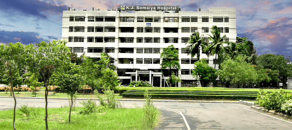
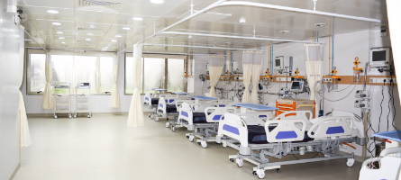
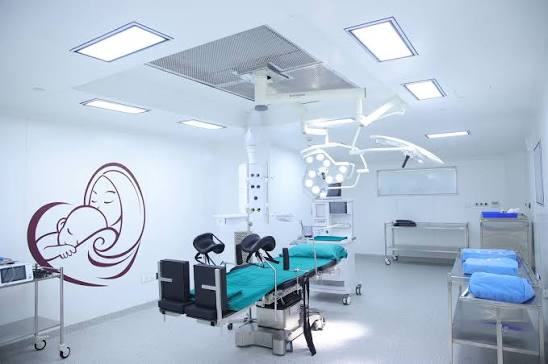

Compassionate Care. Better Health.

Welcome to K. J. Somaiya Hospital. We provide high-quality healthcare through experienced doctors, modern medical technology and compassionate patient care. Our mission is to improve lives with safe and affordable treatment.
Book an AppointmentK. J. Somaiya Hospital is a trusted multi-speciality hospital offering excellent healthcare services. Our skilled doctors, nurses and healthcare professionals ensure every patient receives the best medical care using advanced facilities and modern equipment.

We provide modern medical facilities for quality treatment and patient comfort.

Advanced intensive care unit with 24×7 monitoring.
Clean, spacious and comfortable rooms for better recovery.
Emergency medical services available day and night.
Heart and cardiovascular care.
Treatment for brain and nervous system disorders.
Bone, joint and fracture treatment.
Diagnosis and treatment of common illnesses.
Highly qualified specialists.
Emergency healthcare anytime.
Advanced technology for diagnosis.
Comfort, safety and quality treatment.